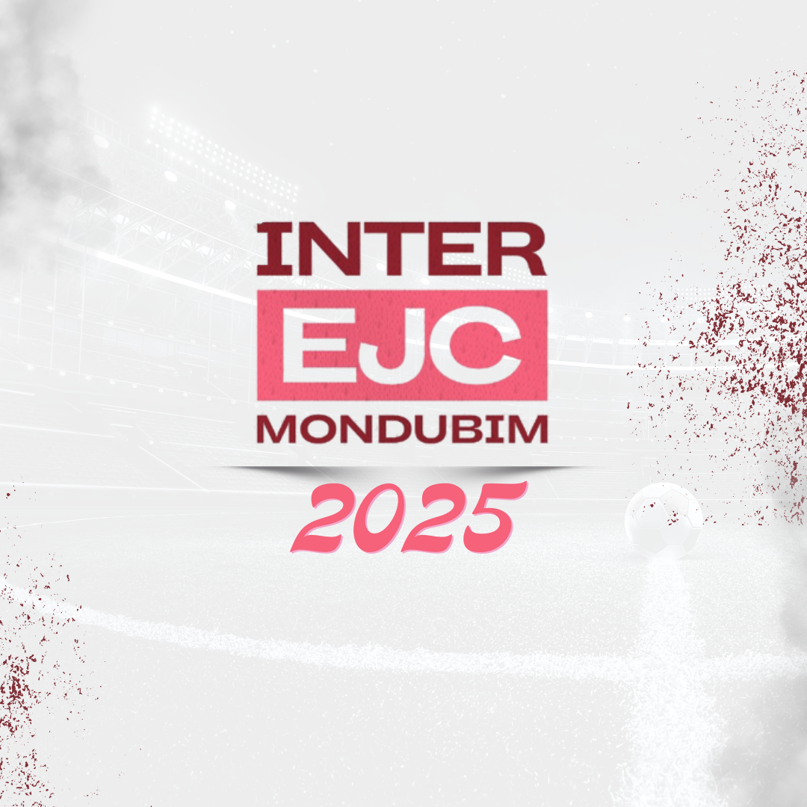
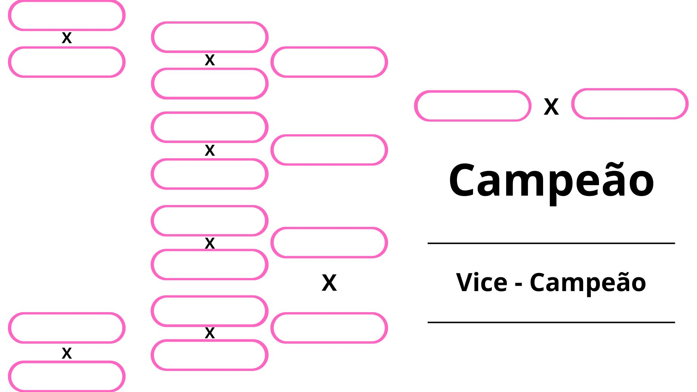

Regulamento da Competição
- Todos os jogos são eliminatorios
- Em Caso de empate no tempo normal, a classificação será decidida nos penaltis
- Premiação somente para o time campeão e vice.
- Não tera somatoria de gols por jogador, sem artilheiro da competição.
- Cada time devera ter até 8 jogadores, sendo que um ou dois deles sejam goleiros.
- Todos os jogadores deveram estar calçados
- Não será permitido o uso de chuteiras ou qualquer calçado com travas.
- Qualquer ofensa ou agressão verbal ou física ao adversário, juiz, torcida
ou organizadores do evento, sendo assim interpretada pelo árbitro ou comitê
organizador da competição, será usado como medida a eliminação do time da competição.
- Cada jogador devrá usar uma só única numeração durante toda a competição.
(em caso de nao encontra material com numeração, entrar em contato com o comitê organizador)
- Todos os jogadores deverão apresentar documento com foto
(RG, CNH, carteira de estudante ou carteira de trabalho) ao mesário pelo
menos 10 minutos antes da partida começar.
- Cada Partida terá duração de 20 minutos, 10 minutos no primeiro e segundo tempo.
- Na soma de dois cartões amarelos em uma unica partida, o jogador levará o cartão
Vermelho, assim cumprindo suspenção no proximo jogo, caso o time se classifique.
- Receber cartão Vermelho direto, haverá cumprimento de suspenção no próximo jogo caso o time se classifique.
- Não haverá somatoria de cartão por partidas.
Sorteio e Chaveamento
Será sorteado 6 times para avançar automanticamente para as quartas de final e os 4 restantes irão disputar a primeira fase.
